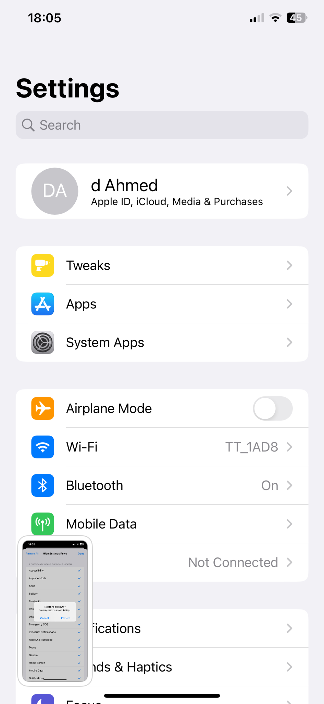
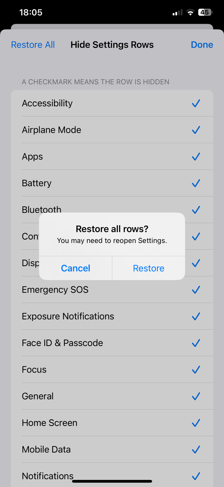
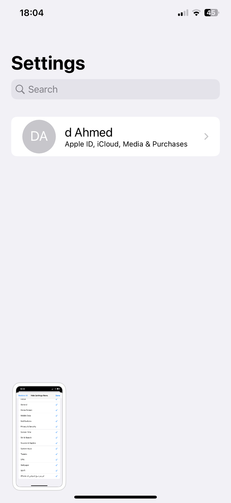

Hide Anything in Settings
Hide selected rows from the iOS Settings app, then restore them at any time.
Rootless
Rootless iOS 15–16
Sileo / Zebra / Cydia
Features
- Hide specific rows and sections inside the main Settings screen.
- Simple checklist interface with visible checkmarks for hidden rows.
- Quick “Restore All” action to bring every hidden row back.
- Designed for rootless jailbreak setups.
Screenshots

Main Settings screen before hiding rows.

Choose which rows to hide and restore all rows when needed.

Clean Settings screen after hiding the selected rows.